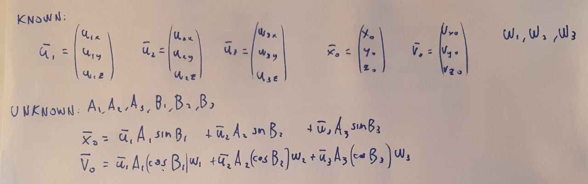

🇮🇹
Normal modes visualizer
Author: Mattia Micheletta Merlin; Date: 26 May 2024
For an oscillatory system with multiple degrees of freedom, a normal mode is a type of motion in which the system oscillates after being disturbed near its equilibrium state. Any physical object, such as a vibrating string, a bridge, a building, or a molecule, has a certain number, sometimes infinite, of normal vibration modes that depend on its structure, components, and the boundary conditions imposed upon it. The number of normal modes is equal to the degrees of freedom of the system. Each normal mode is associated with a natural vibration frequency.
Now, let’s study the normal modes of some simple systems: we start with two pendulums connected by a spring. The generalized coordinates of this system are the two angles of the pendulums with respect to the vertical, which we will call \( \theta \) and \( \phi \). The Cartesian graph below is the configuration space with \( \theta \) in red on the horizontal axis and \( \phi \) in green on the vertical axis; a point in this space represents a state of the system. Use the simulation below, changing the initial conditions with the sliders or text fields (then press start to begin and stop to pause): you’ll see that neither pendulum oscillates with a perfect sine wave because it is being pulled by the spring.
Now, let’s find the normal modes: an equilibrium point of the system is when both pendulums are in the vertical position, i.e., \( \theta = \phi = 0 \), which is the origin of the configuration space (the rest length of the spring is the distance between the two pendulums in this position). At this stable equilibrium point, the potential can be approximated by a paraboloid (using a second-order Taylor expansion); here is the analytical expression, just out of curiosity:
$$ V(\theta, \phi) = \frac{1}{2}(m_1gl + kl^2)\theta^2 + \frac{1}{2}(m_2gl + kl^2)\phi^2 - kl^2\theta\phi $$
where \( l \) is the length of the pendulums, \( m_1 \) and \( m_2 \) are their masses, \( k \) is the spring constant, and \( g \) is the gravitational acceleration. In this case, the potential is a quadratic form, and the normal modes are the eigenvectors of the matrix associated with this form, i.e., the Hessian matrix of the potential. This matrix is:
$$ \begin{pmatrix} m_1gl + kl^2 & -kl^2 \\ -kl^2 & m_2gl + kl^2 \end{pmatrix} $$
And the eigenvectors are:
$$ \begin{pmatrix} 1 \\ 1 \end{pmatrix}, \begin{pmatrix} m_2 \\ -m_1 \end{pmatrix} $$
corresponding to two normal modes: one in which the two pendulums oscillate in phase and one in which they oscillate out of phase. In the simulation below, you can see these two normal modes on the configuration space (the slanted black lines); observe how one of them changes inclination when changing the masses. The motion of the system, in general, is a linear combination of oscillations in these two normal modes; observe how the projections of the system's state onto the normal modes oscillate with a perfect sine wave. Furthermore, if you want to see the normal modes alone, set the initial conditions so that the system state lies on one of these lines, then start the simulation.
The eigenvalues of this matrix are equal to the parameter \( \omega^2 \) of the sine wave, i.e., the square of the natural vibration frequency of the system. In this case, they are:
$$ \omega_1^2 = \frac{g}{l} , \quad \omega_2^2 = \frac{g}{l} + \frac{k}{m_1 || m_2} $$
Now let’s consider a system with three degrees of freedom: three beads (of equal mass \( m \)) that can move along guides positioned in a triangle, connected by three springs (with equal spring constant \( k \) and rest length \( l \)) as shown in the figure. Note how the configuration space is now three-dimensional (each axis is the distance of a bead from the center). Performing calculations similar to before, i.e., expanding the potential around the equilibrium point with Taylor expansion, we find the three eigenvectors that represent the three normal modes of the system. These are:
$$ \begin{pmatrix} -1 \\ 1 \\ 1 \end{pmatrix}, \begin{pmatrix} 0 \\ -1 \\ 1 \end{pmatrix}, \begin{pmatrix} 2 \\ 1 \\ 1 \end{pmatrix} $$
and they are represented in the 3D graph by the slanted gray lines. The natural vibration frequencies are:
$$ \omega_1^2 = \frac{16 l^2 - 12 l}{3m} , \quad \omega_2^2 = \frac{16 l^2 - 10 l}{m} , \quad \omega_3^2 = \frac{112 l^2 - 30 l}{3m} $$
In the following simulations, you can see the three normal modes one at a time and then a linear combination of them.
Unfortunately, I was unable to create an interactive simulation for this 3D system, i.e., one where the system evolves from chosen initial conditions. I couldn’t do it because I was unable to solve the equations I’ve shown below:

If any reader knows how to do it, please contact me.